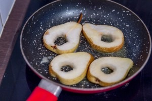

Bruschetta poire fourme d’ambert

Aujourd’hui je vous retrouve avec une recette qui représente bien mon amour inconditionnel pour les bruschette car oui c’est bien une nouvelle recette de bruschetta que je vous propose et il s’agit de la recette de ma toute nouvelle bruschetta poire fourme d’ambert.
S’il y a encore quelques jours je pouvais me permettre de rêvais de fraises et de cocktails au bord de la mer je peux vous dire qu’aujourd’hui je pense chamallow, chocolat chaud et canapé bien douillet. Je ne sais pas chez vous mais ici ça se rafraichit drôlement et surtout il ne s’arrête plus de pleuvoir… Avec un temps pareil cette bruschetta poire fourme d’ambert est donc absolument la bienvenue! Évidemment, vous pouvez totalement remplacer la fourme d’ambert par du roquefort ou encore du gorgonzola. Personnellement, j’ai choisi la fourme d’ambert car d’un j’adore ça, de deux je trouve que c’est un fromage pas trop trop fort (si l’on compare au roquefort et au gorgonzola) et c’est alors parfait pour mon chéri qui n’est pas super fan de fromage et de trois la fourme d’ambert avec la poire (et le tout sur une bruschetta) je peux vous assurer que c’est parfait! Pour la petite histoire et pour ceux qui ne le savaient pas, la fourme d’ambert est un des fromages les plus anciens de France! Certains l’utilisaient même comme monnaie d’échange au 18ème siècle et Jules César lui-même y aurait goûté avant la conquête de la Gaule! Je ne suis pas certaine qu’à l’époque les bruschette étaient de rigueur mais en tout cas aujourd’hui on ne va pas s’en priver! Dans ma recette vous verrez que j’ai ajouté un peu de noix et de miel pour accompagner les poires et la fourme d’ambert mais je n’en dis pas plus et je vous laisse découvrir cette toute nouvelle bruschetta et si comme moi vous voulez faire votre pain alors RDV ici avant de commencer avec la recette de mes pains ciabatta maison.
Ingrédients
- Poires - 2
- Beurre doux - 20g
- Fourme d'ambert - 140g
- Pain ciabatta ou autre pain pour tartine - 1
- Noix - 1 grosse poignée
- Huile de noix (ou à defaut huile d'olive)
- Miel
Instructions
- Couper votre pain en deux
- Faites griller vos pains très légèrement dans le grille pain ou dans le four. Attention on ne veut pas que le pain devienne "dur" ou "grillé" mais légèrement toasté
- Préchauffer le four à 180°
- Arroser légèrement d'un fin filet d'huile de noix (ou à défaut d'huile d'olive) l'ensemble de vos tranches de pain
- Tartiner de fourme d'ambert
- Couper les poires comme sur la photo
- Faire fondre le beurre dans une poêle
- Faites-y revenir les poires Il faut qu'elles fondent légèrement, qu'elles gardent leur forme et ne se défassent pas
- Placer les poires sur votre tartine
- Passer au four 3 minutes dans un four à 180°
- Arroser d'un filet de miel
- Parsemer de noix l'ensemble de votre bruschetta
- Servir avec une salade dans laquelle vous ajouterez les restes de poires et quelques cerneaux de noix
- Dégustez sans plus attendre 🙂

Les tips de la communauté
Très apprécié des lecteurs qui admirent l'association saveurs-présentation. Les commentaires sont globalement enthousiastes et la recette a inspiré des variantes chez les visiteurs.
Astuces
- Préserver l'association poire-fourme qui fonctionne à merveille
- La présentation et les photos valorisent beaucoup la recette
- Annecdote sur l'origine des saveurs appréciée des lecteurs
Variantes suggérées
- Mini pizzas roquefort-poire (mentionnée par Cassandre)